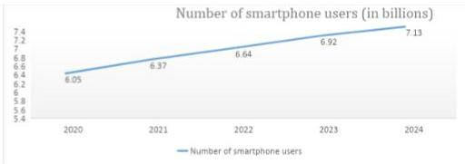
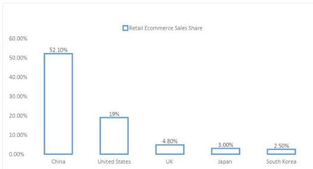

२. डिजिटल संसारको परिचय
डिजिटल संसारले प्रविधि र सूचनाको संसारलाई बुझाउँछ जुन डिजिटल डाटाको रूपमा अवस्थित छ। यसमा कम्प्युटर, इन्टरनेट र डिजिटल उपकरणहरू जस्तै स्मार्टफोन, ल्यापटप र गेमिङ कन्सोलहरू समावेश छन्। डिजिटल संसारले हाम्रो दैनिक जीवनमा धेरै प्रभाव पारेको छ, हामीले सञ्चार गर्ने, जानकारी पहुँच गर्ने, व्यापार गर्ने र मनोरञ्जन गर्ने तरिकामा परिवर्तन ल्याएको छ। प्रविधिको
निरन्तर विकासको साथ, डिजिटल संसार निरन्तर बढ्दै र विकसित हुँदै छ, जसले नयाँ अवसरहरू एकअर्कासँग अन्तरक्रिया गर्ने तरिकालाई आकार दिँदै छ।
आज, हामी अनगिन्ती इलेक्ट्रोनिक उपकरणहरूले घेरिएका छौं जसले हामीलाई डोमेनहरूमा प्रवेश गर्ने सक्षम बनाएको छ जुन हामीले पहिले कहिल्यै अनुभव नगरेको र हाम्रो कार्यस्थलमा दक्षता थपेको छ। हाम्रा कम्प्युटरहरूदेखि हाम्रा स्मार्टफोनहरू सम्ममा हामी डिजिटल जानकारीले घेरिएका छौं जसले हाम्रो दिमाग र व्यवहारलाई स्फुर/सशक्त राखी रहेको छ।
नेपाल सरकारले '२०१९ डिजिटल नेपाल फ्रेमवर्क, अनलकिङ नेपालज ग्रोथ पोटेन्शियल' ढाँचा जारी गरेको छ। डिजिटल नेपाल फ्रेमवर्क एउटा खाका हो जसले डिजिटल पहलहरूले कसरी आर्थिक वृद्धिमा योगदान दिन सक्छ र नेपाललाई विश्वव्यापी अर्थतन्त्रमा सहभागी हुने अवसरहरू पहिचान गर्न सक्छ भन्ने मार्गचित्र प्रदान गर्दछ। यो एक राष्ट्र, आठ क्षेत्रहरू, र ८० डिजिटल पहलहरूको रूपमा देखा पर्दछ। डिजिटल नेपाल फ्रेमवर्क अन्तर्गत आठ क्षेत्रहरू डिजिटल फाउन्डेसन, कृषि, स्वास्थ्य, शिक्षा, ऊर्जा, पर्यटन, वित्त र शहरी पूर्वाधार हुन्। ८० डिजिटल पहलहरू पहिचान गरिएका छन् जसले प्रमुख चुनौतीहरूलाई सम्बोधन गर्दै नेपालको सामाजिक-आर्थिक वृद्धिलाई अघि बढाउने उद्देश्यका साथ प्रत्येक आठ प्रमुख क्षेत्रहरूमा वृद्धिको सम्भावनालाई अनलक गर्दैछ। (सञ्चार तथा सूचना प्रविधि मन्त्रालय, मार्च २०१९)
{kind=link}

Statista को अनुसार, स्मार्टफोन पहुँच गर्ने जनसंख्या ६.३७ बिलियन पुगेको छ जुन विश्वव्यापी जनसंख्याको लगभग ७९.६२% हो। उपकरणको वृद्धि र लोकप्रियता, बढ्दो प्रतिस्पर्धा, र सञ्चारको लागतमा आएको कमीले विश्वका अधिकांश मानिसहरूलाई यस उपकरणको आनन्द लिन प्रेरित गरेको छ।
३. विश्वव्यापी प्रवृत्ति र डिजिटलाइजेशन
डिजिटलाइजेसनको लागि विश्वव्यापी प्रवृत्तिले दैनिक जीवन र व्यापार सञ्चालनका विभिन्न पक्षहरूमा प्रविधि र डिजिटल प्रणालीहरूको बढ्दो एकीकरणलाई जनाउँछ । यो प्रवृत्ति इन्टरनेट, मोबाइल उपकरणहरू, र क्लाउड कम्प्युटिङ जस्ता डिजिटल प्रविधिहरूमा भएका प्रगतिहरूद्वारा संचालित छ, जसले मानिसहरूलाई सञ्चार गर्ने, काम गर्ने र जानकारी पहुँच गर्ने तरिकामा क्रान्तिकारी परिवर्तन गरेको छ । डिजिटलाइजेसनले धेरै उद्योगहरूमा दक्षता र स्वचालन बढेको छ, साथै ई-वाणिज्य, अनलाइन शिक्षा, र टेलिमेडिसिन जस्ता क्षेत्रमा नयाँ व्यापार मोडेल र अवसरहरूको सिर्जना गरेको छ ।
विकसित देशहरूले आफ्नो अर्थतन्त्रमा उच्च स्तरको डिजिटलाइजेशन रोपेका छन् । इन्टरनेटमा पहुँच, उच्च वैज्ञानिक र प्राविधिक सम्भावना, र व्यापक जानकारी पहुँचले महत्वपूर्ण प्रभाव देखाएको छ । डिजिटलाइजेशनको उच्च डिग्रीको साथमा ई-कमर्स आउँछ ।
ई-कमर्स अनलाइन प्लेटफर्म हो जहाँ खरिदकर्ता र विक्रेताहरूले बजारमा सामान र सेवाहरू आदानप्रदान गर्छन् । यी विकसित राष्ट्रहरूको सकारात्मक आर्थिक वृद्धिमा क्रेडिट कार्ड, दूरसञ्चार र ई-कमर्सले ठूलो योगदान गरेको छ । Statista द्वारा वर्ष २०२२ को तथ्याङ्क अनुसार, चीनसँग हाल विश्वव्यापी बिक्रीको ४६.३०% संग खुद्रा ई-कमर्स बिक्रीको सबैभन्दा बढी हिस्सा छ ।
विकासशील देशहरूले आफ्ना विकासशील देशहरूको समकक्षहरूको तुलनामा डिजिटलाइजेशनको परिणामको रूपमा (लगभग २५% को कारक) मा सीमित रूपमा उच्च आर्थिक वृद्धि लाभहरू प्राप्त गर्छन् । विश्वको यस भागमा सकारात्मक प्रभाव धेरै जसो गैर-व्यापार योग्य क्षेत्रहरूमा उत्पादकता जस्ता क्षेत्रहरूमा क्रेडिट गरिएको छ । विकासोन्मुख राष्ट्रहरूले रोजगारी र वाणिज्यको रूपमा भए पनि पर्याप्त वृद्धिका अवसरहरू प्राप्त गरेको देखिन्छ ।
{kind=link}

२०११ मा मात्रै, अमेरिकामा डिजिटलाइजेसनले तिनीहरूलाई विश्व आर्थिक उत्पादनमा $ १९३ बिलियन प्रदान गर्न सक्षम बनायो । विश्वव्यापी रूपमा, डिजिटलाइजेसनले ६ मिलियन रोजगारहरू सिर्जना गरेको छ (एसिया महाद्वीपको लागि ५८% लेखांकन) ।
हाम्रा छिमेकी देशहरूको नतिजा अझ सामान्य छ । प्रमाणहरूले देखाउँदछ कि इन्टरनेट र मोबाइल घनत्वले यी दुई बढ्दो अर्थतन्त्रहरूमा महत्वपूर्ण सकारात्मक प्रभाव पारेको छ । १९९१ देखि २०१९ सम्म, भारत र चीनले क्रमशः ४.६६ र ८.७४ को औसत वार्षिक वृद्धि दर देखे । यी दुई देशहरूमा मोबाइल घनत्व र इन्टरनेट घनत्व पनि सोही अवधिमा बढ्यो । (स्रोत: PwG नेटवर्कको रणनीति र भाग) ।
यद्यपि अन्य कारकहरू जस्तै निर्यात, एफडीआई र स्कूली शिक्षाको अपेक्षित वर्षहरू, र सीपीआईले पनि आर्थिक वृद्धिमा योगदान पुर्याएको छ, तिनीहरूलाई एकान्तमा नभई मिलाएर हेर्नु पर्छ । अर्थतन्त्रको वृद्धिमा डिजिटलाइजेसनको पूर्ण र सापेक्षिक प्रभावलाई कहिल्यै कम आंकलन गर्न सकिँदैन ।
यदि हामीले नेपालको कुरा गर्ने हो भने, जनवरी २०२२ मा इन्टरनेट प्रवेश दर ९१% रहेको छ भने इन्टरनेट प्रयोग गर्ने व्यक्ति ३६.७% रहेको छ । मोबाइल प्रवेश दर हाम्रो राष्ट्रिय जनसंख्या ४१.१८ मिलियन पुगेको छ, जुन १३६% सम्म पुग्यो (स्रोत: Datareportal, Digital 2022 : Nepal) । यसो भन्दैमा अझै धेरै गर्न बाँकी छ । हाम्रो राजनीतिक अस्थिरता, सूचना प्रविधिको प्रयोगमा सीमितता र
परम्परागत डाटाबेस व्यवस्थापनको जरामा फर्किएका कारण हामी विश्व प्रतिस्पर्धी बजारमा अझै धेरै पछाडी छौं ।
त्यहाँ डिजिटलीकरण तिर विश्वव्यापी प्रवृत्तिका धेरै उदाहरणहरू छन्:
- मोबाइल उपकरणहरूको बढ्दो अपनत्व: स्मार्टफोन र अन्य मोबाइल उपकरणहरूको व्यापक उपलब्धता र किफायतीताले डिजिटलाइजेसन तर्फ प्रवृत्ति बढाइरहेको छ, किनकि धेरै मानिसहरूले इन्टरनेट पहुँच गर्न, सञ्चार गर्न र डिजिटल सेवाहरूमा संलग्न हुन आफ्ना उपकरणहरू प्रयोग गर्छन् ।
- ई-कमर्सको वृद्धि: अनलाइन किनमेल र ई-कमर्स द्रुत रूपमा बढ्दै गएको छ किनभने उपभोक्ताहरू बढ्दो रूपमा अनलाइन सामान र सेवाहरू खरिद गर्ने सुविधा र गतिलाई प्राथमिकता दिन्छन् ।
- परम्परागत उद्योगहरूको डिजिटल रूपान्तरण: धेरै परम्परागत उद्योगहरू, जस्तै खुद्रा, बैंकिङ, र स्वास्थ्य, डिजिटल रूपान्तरणबाट गुज्रिरहेका छन्, किनभने तिनीहरूले दक्षता, ग्राहक अनुभव, र प्रतिस्पर्धात्मकता सुधार गर्न डिजिटल प्रविधिहरू अपनाएका छन् ।